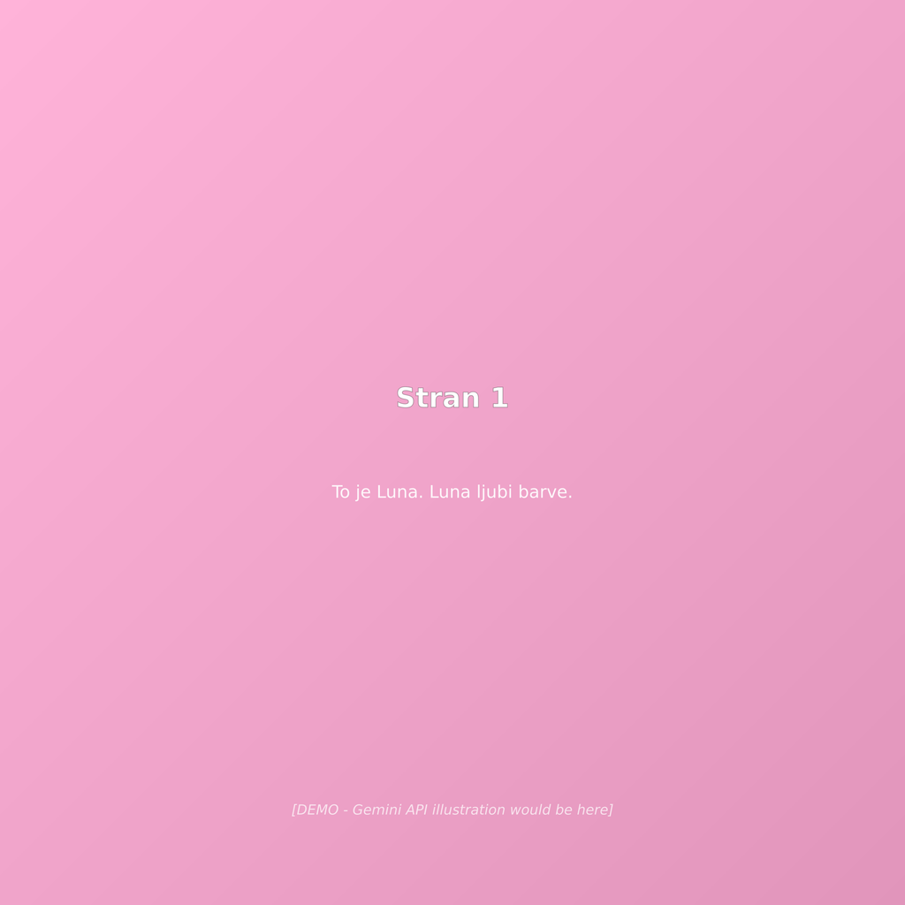
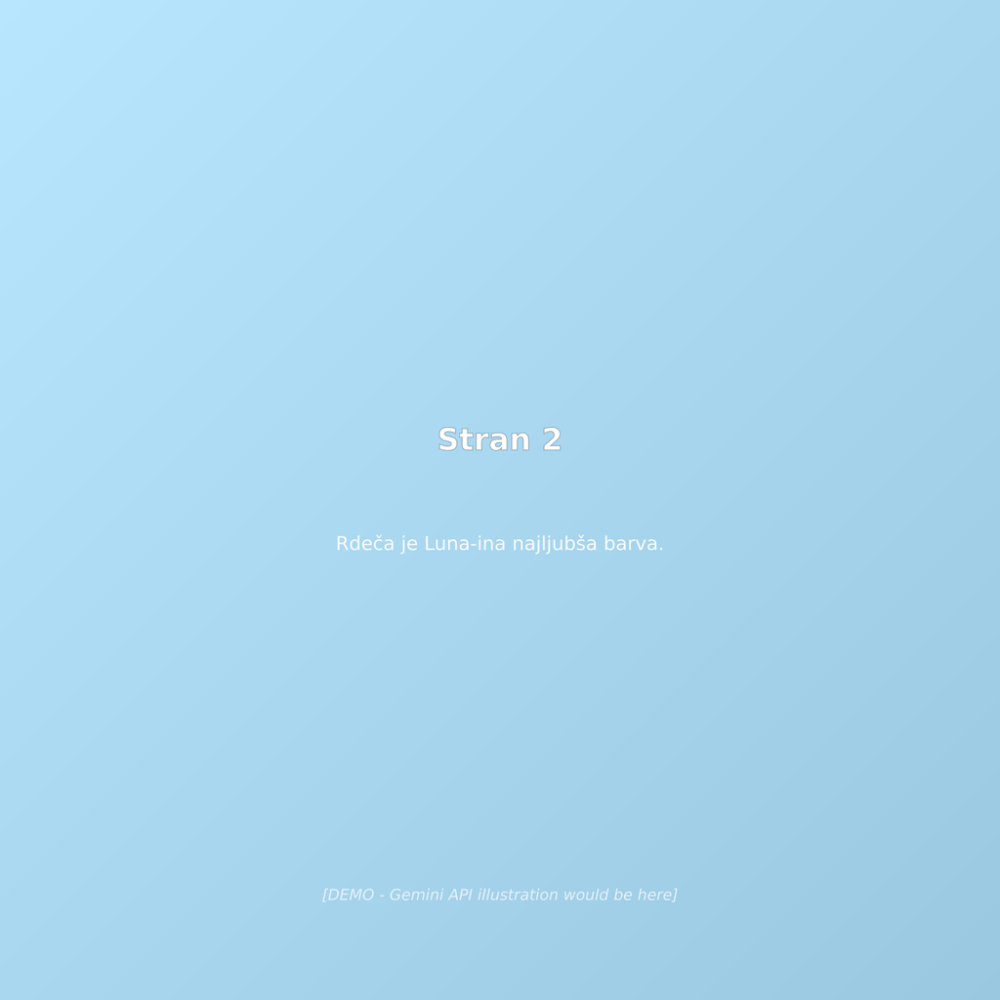
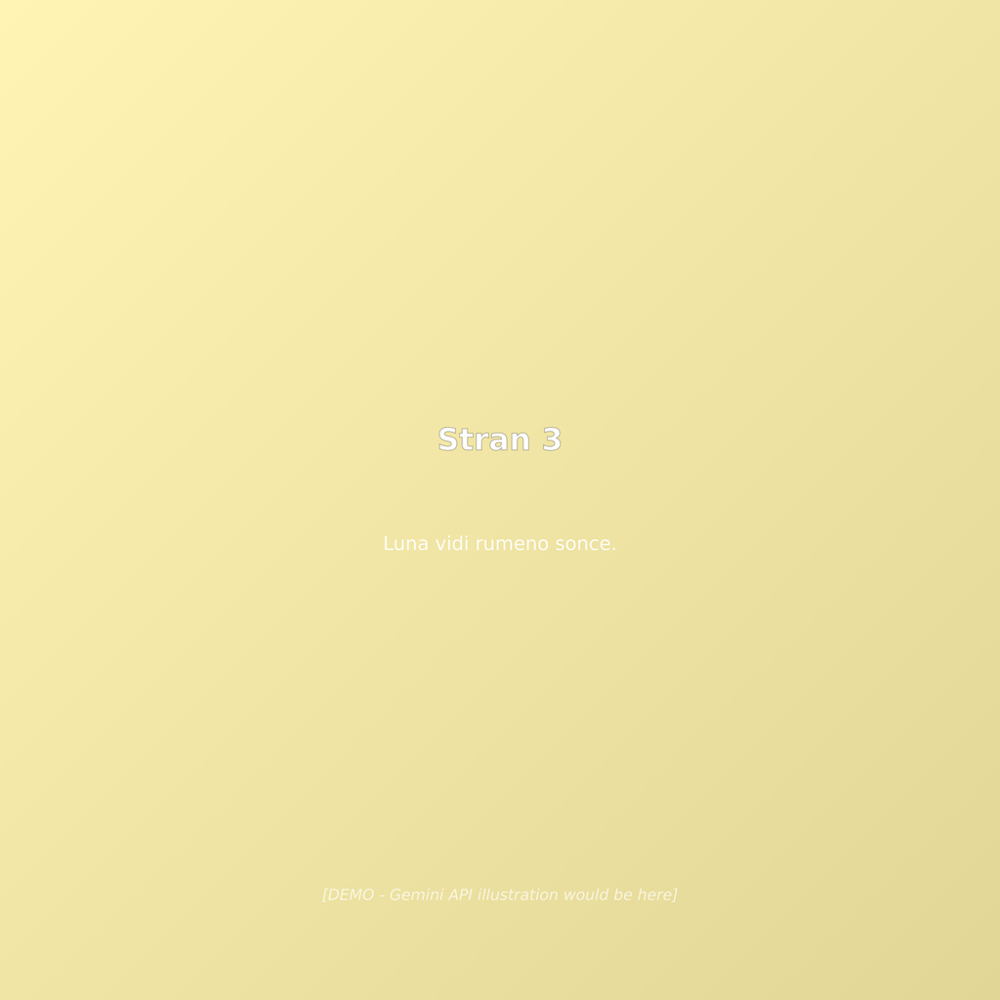
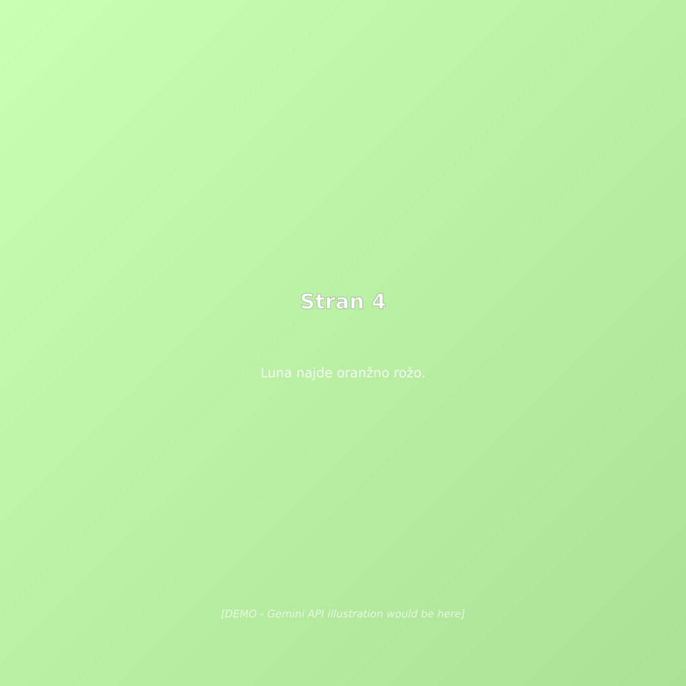
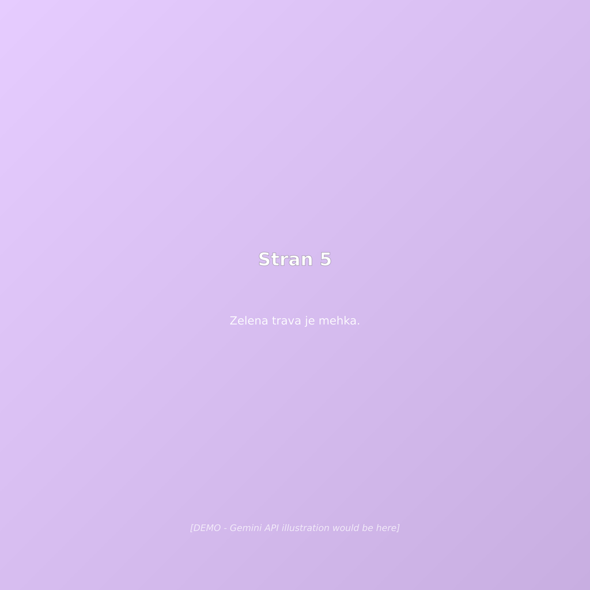

To je Luna. Luna ljubi barve.
🎨 Page 1: Luna standing in a garden full of colorful flowers and butterflies. She is smiling widely with her arms spread open in joy. The background has soft pastel flowers in various colors.
Otroška slikanica za starost 3-5 let
Celotna knjiga vsebuje 16 čudovito ilustriranih strani.

To je Luna. Luna ljubi barve.

Rdeča je Luna-ina najljubša barva.

Luna vidi rumeno sonce.

Luna najde oranžno rožo.

Zelena trava je mehka.